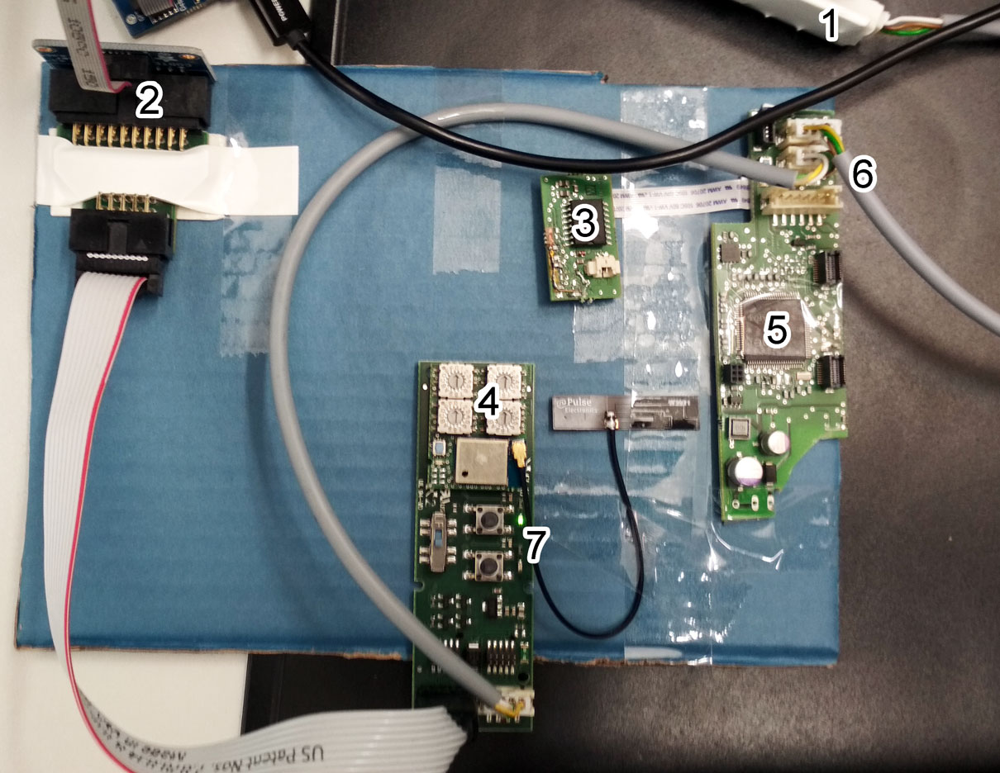

General
Development
When sending code to waldmann, refer to ../mway/Generate-Distributions.adoc.
Setup

Connecting the devboard to USB via its USB/UART connector (1) will power the board. Connecting it via the multiple Jlink adaptors (2) allows us to flash the nRF52840 chip.
-
1: USB / Serial adapter and board power
-
2: Segger Jlink Connection
-
3: MicroSd card reader for firmware updates
-
4: BLE module with button and rotary encorders
-
5: Waldmann host controller ATSAMD51N19A on main board (BLE module can also be plugged in here
-
6: Multiple serial sockets
-
7: Development PCB with some buttons and connectors
Each of the module sockets (black) or the serial cable sockets (white) on the main board (5) are connected to the host controller and have a specific (src/dst) id. The host controller will do routing between these ids.
Updating the Waldmann Controller
The Waldmann controller does not need to be flashed, but will be updated using the microSd card reader. When using the button firmware update, the update will be done each time, downgrade and the same version will work as well.
-
Put the microSd in a PC card reader
-
Copy the firmware update to <sdCard>\WA\IMAGE (E.g. the file is V00_01_s.bin)
-
Unplug the serial adapter (1)
-
Put the microSd card into the card reader (3)
-
hold down the blue button on the host controller PCB (5) and plug in the serial adapter, then let go of the blue button after a second.
-
The LED on the host controller board should be on and stay on for about 15 to 20 seconds. Afterwards, it will go off.
Sensor Messages
For Waldmann the profileId is used as the register and the nodeAddress (e.g. 0x00 for the main controller) is used to address the attached device that should react on this profile. The actionType is currently unused as the profiles do not have a direction distinction.
The following message can be used to switch an LED off:
rltn-iot/ORGANIZATION_UUID/SITE_UUID/BLENODE_UUID/rwio/WM_MODULE/0-4194/write
{
"register":4194,
"data":"AAA=",
"length":2,
"module":"WM_MODULE",
"component":0,
"timestamp":12345
}Test Commands
Below are some helpful commands for testing
//Activate LED
55 02 00 10 62 00 20 10 00 20 14 3B 6E
//Ack for activate LED
55 01 00 00 A1 10 00 00 20 00 88 D2
//Tunnel message
55 05 00 90 62 00 20 10 00 00 00 00 00 77 89 41
//Sending tunnel data via terminal
raw_data_light 0 155 0 62:90:20:00:00:10:77
//Fake LED message for testing led off
55 02 00 10 62 00 20 10 00 00 00 6F 3D
//Fake LED message for testing led on
55 02 00 10 62 00 20 10 00 01 00 5C 0C
//For reference
component_act [nodeId] [moduleId] [actionType] [component] [registerAddress] [dataHex]
//Switch the LED of the host on
component_act 0 155 0 0x00 0x1062 02:14
//Switch the LED of the host off
component_act 0 155 0 0x00 0x1062 00:00
//Reset the host (no ack)
component_act 0 155 0 0x00 0x74 00